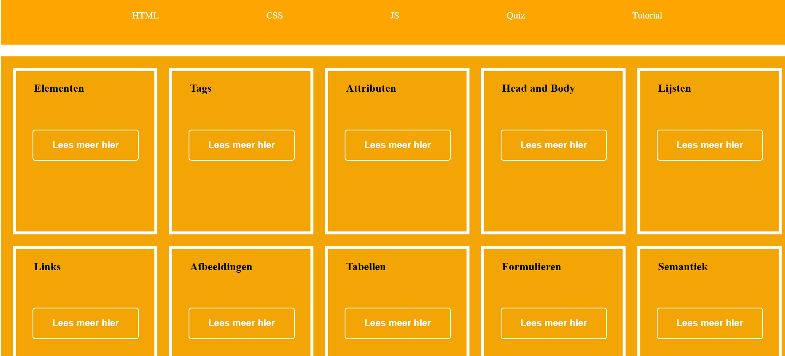
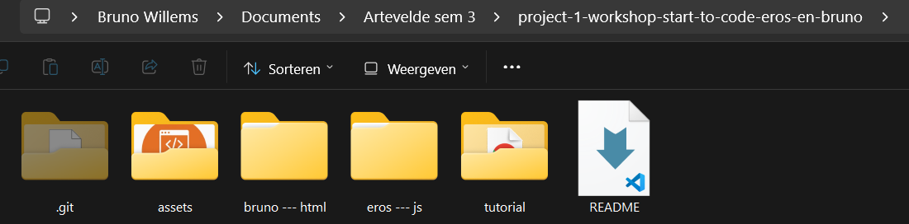
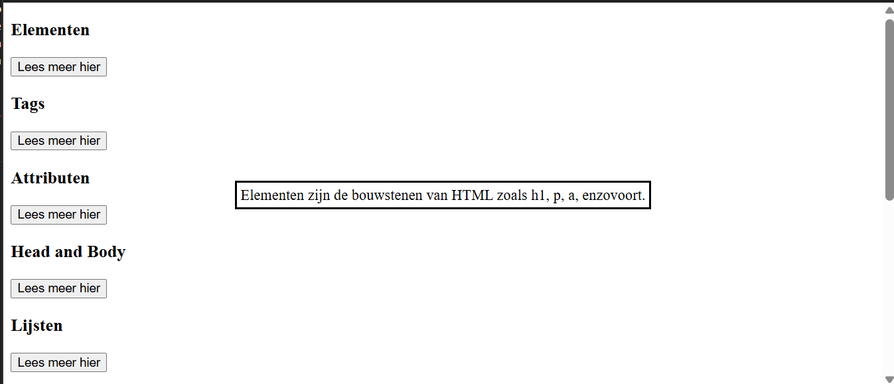
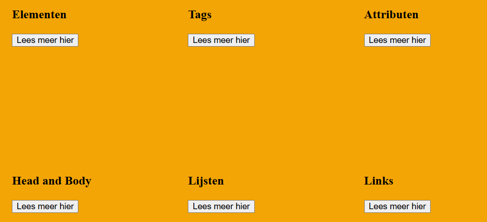
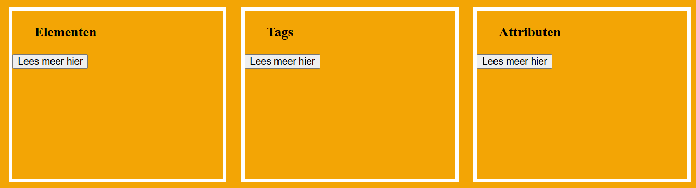
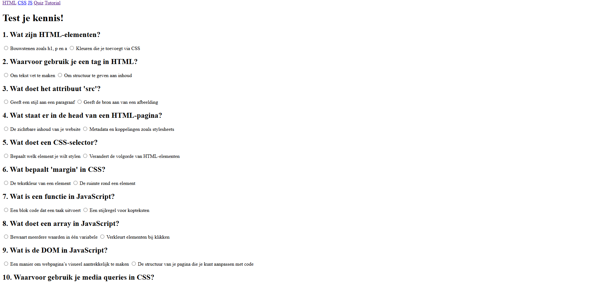
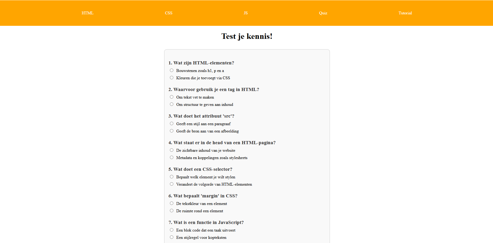
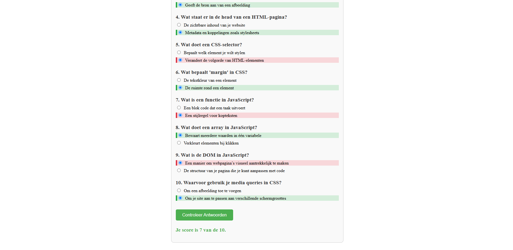

Hoe maak je deze website?
Hier vind je een tutorial hoe je deze website kunt maken.

Voor onze website hebben wij 3 code talen gebruikt:
- HTML
- CSS
- JavaScript
Deze website is redelijk gemakkelijk te maken.
Hieronder vind je alle stappen die je moet volgen om deze website te maken.
Stap 1
Allereerst moet je de applicatie van Visual Studio Code hebben.
Je kunt de applicatie maken door op de link hieronder te klikken.
Download Visual Studio CodeStap 1.1
Maak een nieuwe map met de naam "starter-project".
Maak in deze map nog enkele mappen. Hieronder kun je een voorbeeld zien van hoe onze mappenstructuur eruit ziet:

Je kunt gerust de namen van de mappen veranderen.
OPGELET!!! De git folder en de readme.md file moet er niet bij!
Stap 1.2
Maak een nieuwe HTML-pagina met de naam "index.html".
Open het "index.html" in de "live-server" icon. Je vind het logo onderaan.
Stap 2
Laten we beginnen met coderen! Hieronder kunnen jullie de html pagina kopiëren.
Stap 2.1
Nu gaan we beginnen met stylen van de header.
In een latere stap gaan we jullie tonen om alle andere zaken op te maken.
Maak een nieuwe folder aan genaamd "css".
Maak in deze folder een nieuwe CSS-pagina aan met de naam "main.css".
Plaats de volgende code daarin.
Stap 2.2
Maak in diezelfde folder een nieuw bestand aan: "header.css".
Zoals je in de main.css file zag kun je andere css bestanden toevoegen d.m.v de @import command.
Nu is je header.css gelinkt met je main.css bestand.
Kopieer volgende code in je header.css bestand:
Stap 2.3
Als u nu naar uw website gaat, ziet u een opgemaakte header.
Stap 3
Nu gaan we beginnen om de cards op te maken.
Stap 3.1
In de index.html bestand plaats je de volgende code:
TIP!!! een div tag is een handige tool om stukken HTML op te splitsen.
Stap 3.2
Kopieer de code van stap 3.1 10 keer en verander de tekst in de divs.
Bedenk zelf enkele tips of gebruik chat GPT voor tricks
Hieronder vind u wat uitleg over wat de code doet en betekend:
Stap 3.3
Zoals u ziet heeft de div een class met de naam "cards".
De class "cards" wordt gebruikt om de cards te stylen.
h3 is een tag om een koptekst of een titel te maken.
In de volgende div ziet u de class "popover".
De class "popover" wordt gebruikt om een popover te maken.
In de button ziet u een nieuwe tag: "popovertarget".
Deze tag wordt gebruikt om de popover te laten zien.
De button heeft ook een class met de naam "cards__btn".
Deze class wordt gebruikt om de button te stylen.
de button heeft een aria-label met de naam "Learn more about elementen".
Deze aria-label wordt gebruikt om de button toegankelijk te maken voor mensen met een beperking.
Hieronder kunt u zien hoe het eruit komt te zien.

Proficiat! U heeft uw eerste HTML website gemaakt!
Stap 4
Nu gaan we verder gaan met het CSS gedeelte.
Stap 4.1
Maak in de css folder een nieuw CSS-bestand met als naam "box.css".
Vergeet niet om in je "main.css" je bestand "box.css" te linken via "@import url('./box.css');"
Hieronder vind je de code die je moet kopiëren:
Als u naar uw website gaat, ziet u een opgemaakte box.
Hier kunt u het resultaat zien:

Stap 4.2
Maak in de css folder een nieuw CSS-bestand met als naam "cards.css".
Vergeet niet om in je "main.css" je bestand "cards.css" te linken via "@import url('./cards.css');"
Hieronder vind je de code die je moet kopiëren:
Zodra je de pagina herlaadt, kun je de cards zien in hun eigen sectie.
Hier kunt u het resultaat zien:

Stap 5
We zijn klaar met de HTML pagina.
Nu gaan we beginnen met de CSS pagina.
Dit is hetzelfde code als de HTML pagina.
Maak een nieuw bestand aan met de naam "css.html".
U kunt hieronder de code kopiëren om erin te plaatsen:
Kopieer de code van stap 5 10 keer en verander de tekst in de divs.
Verzin zelf nog andere tips en tricks of gebruik Chat GPT om ze te genereren.
De css blijft gelinkt met de main.css.
Alle css-bestanden die daarin zijn geplaatst met "@import" blijven gelinkt.
Stap 6
Nu gaan we beginnen met de JS pagina.
Dit is hetzelfde code als de HTML pagina.
Maak een nieuw bestand aan met de naam "js.html".
U kunt hieronder de code kopiëren om erin te plaatsen:
Kopieer de code van stap 5 10 keer en verander de tekst in de divs.
Verzin zelf nog andere tips en tricks of gebruik Chat GPT om ze te genereren.
De css blijft gelinkt met de main.css.
Alle css-bestanden die daarin zijn geplaatst met "@import" blijven gelinkt.
Stap 7
Nu gaan we een quizpagina maken. Hiermee kun je testen wat je geleerd hebt over HTML, CSS en JavaScript.
We bouwen de pagina stap voor stap op. We beginnen met de HTML, dan de CSS, en tot slot voegen we de JavaScript toe.
Stap 7.1
Maak een nieuw HTML-bestand aan met de naam "quiz.html".
Deze pagina bevat 10 quizvragen met keuzeknoppen (radio buttons).
Je kunt de basisstructuur hieronder kopiëren:
Kopieer bovenstaande vragen.
Verzin zelf nog wat vragen door middel van de cards die jullie zelf hebben gemaakt.
Let op: elke vraag heeft een naam zoals q1, q2, ..., zodat we die
makkelijk kunnen uitlezen in JavaScript.
Helemaal onderaan staat een knop om je antwoorden te controleren.
Zo ziet de pagina eruit:

Stap 7.2
De opmaak van deze pagina komt vanuit je bestaande CSS-bestanden.
Het bestand quiz.html gebruikt main.css zoals je hieronder ziet:
<link rel="stylesheet" href="../css/main.css">Als je in main.css ook nog bestanden importeert via @import, dan worden
die ook automatisch toegepast.
Als je specifieke stijlen voor de quiz wilt toevoegen, kun je ook een nieuw bestand maken zoals
quiz.css en deze linken via:
@import url('./quiz.css');Hieronder zie je hoe de vragen en knoppen eruitzien met CSS:

Stap 7.3
We gebruiken JavaScript om je score te berekenen wanneer je op de knop klikt.
Voeg onderaan in quiz.html het volgende script toe om de functie te linken:
<script src="../eros --- js/js/main.js"></script>In dat bestand staat de functie checkAnswers().
De functie controleert welke antwoorden je hebt aangeduid, telt de juiste antwoorden, geeft een kleur bij fout of juiste antwoorden, en toont je score op het scherm.
Wanneer je op de knop "Controleer Antwoorden" klikt, wordt deze functie uitgevoerd.
Je kunt de werking van deze functie bekijken in de onderstaande JSFiddle:
Zo ziet het resultaat eruit nadat je op de knop klikt:
